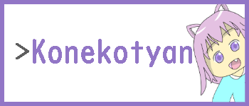
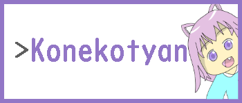
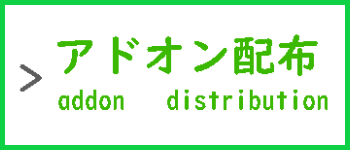
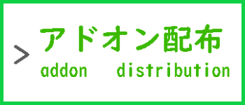

こねこP・BAN情報
★ ＭＥＮＵ ★ 


 

 

利用者はお読みください。
このページは「 BANされたプレイヤー 」を記載しています。
BANされた理由や今後の荒らし対策にご利用ください。
基本的に荒らし禁止です。利用規約をご覧ください。
※戻る場所はメニューへ！
BANされたプレイヤー
| BAN者スキン＆画像 |
BAN者ネーム＆タグ |
BANされた理由 |
| NO.png |
NO_ID |
記録がありません。 |
| NO.png |
NO_ID |
記録がありません。 |
| NO.png |
NO_ID |
記録がありません。 |
こねこP公式サイト編集部 2023 - 2024